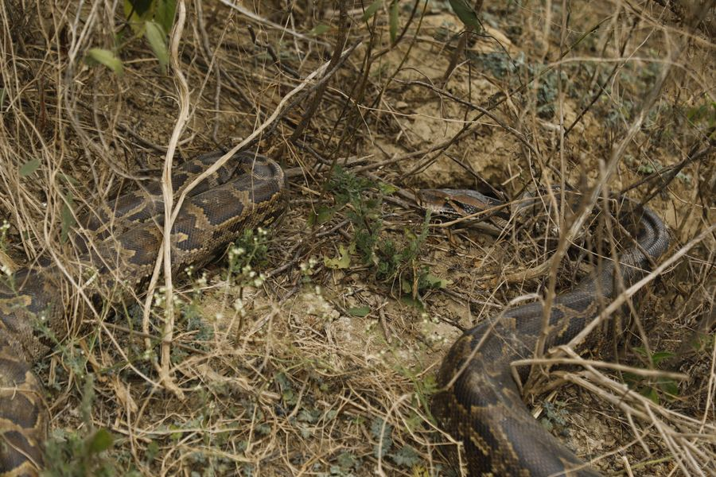

Patience, held still long enough to become a photograph.
Field photography from India's forests and wetlands — Manoj Tiwari spends his days waiting for the moment that can't be staged.
Recent sightings from the field
A rotating selection from ongoing work at Keoladeo National Park and its surrounding wetlands — updated as new frames come back from the field.

No staged shots. No bait. No shortcuts.
Every frame here is made on foot, at a distance the animal chose, in light no one arranged. Some mornings that means two hours for one usable frame. Some mornings it means none at all.
Manoj works primarily around Keoladeo National Park's wetlands, where herons, storks, pythons and kingfishers share a small, dense stretch of reed and water — which means the real skill isn't finding the subject, it's waiting for it to stop noticing you.
Read the full storyInterested in a print, a licence, or a guided walk?
Get in touch directly — every enquiry is answered personally.
Get in touch